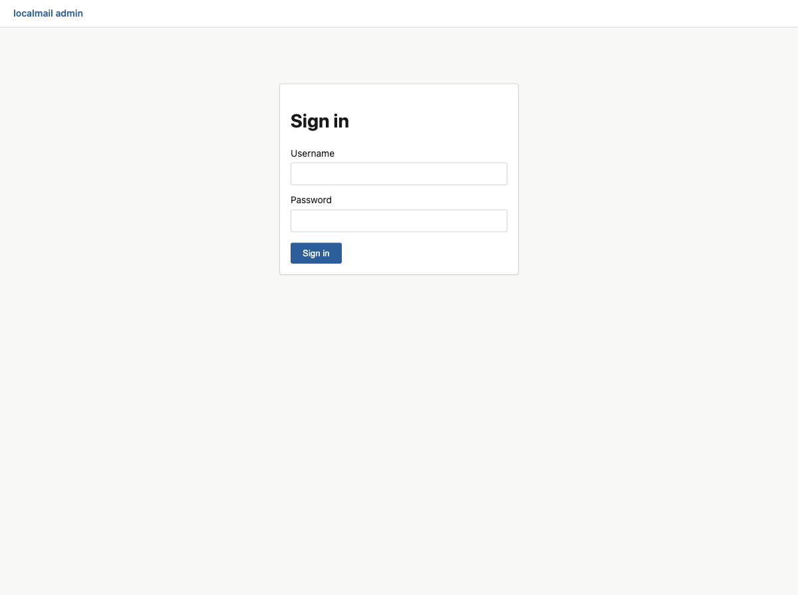
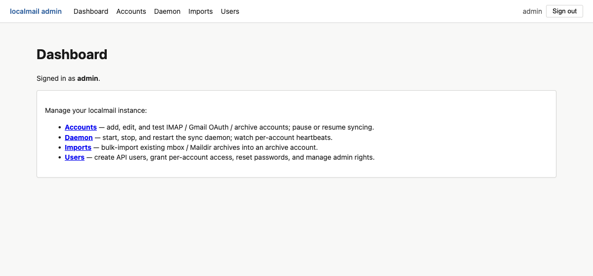
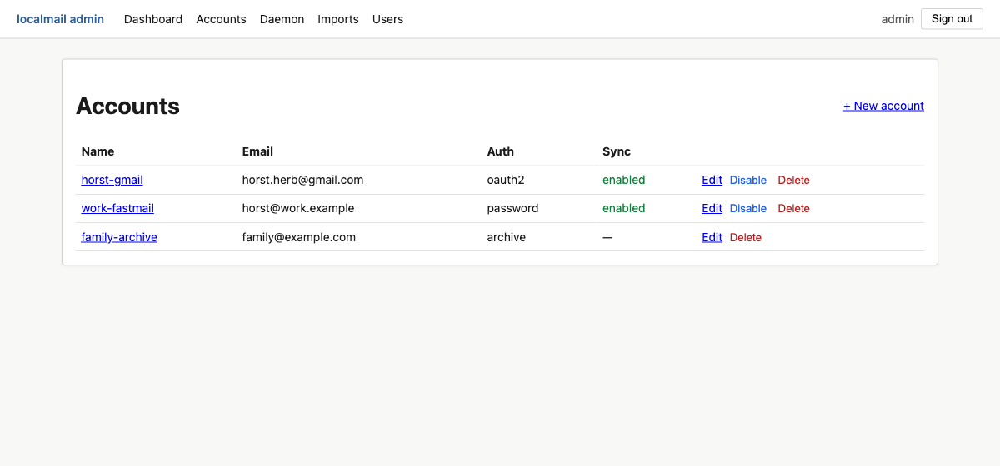
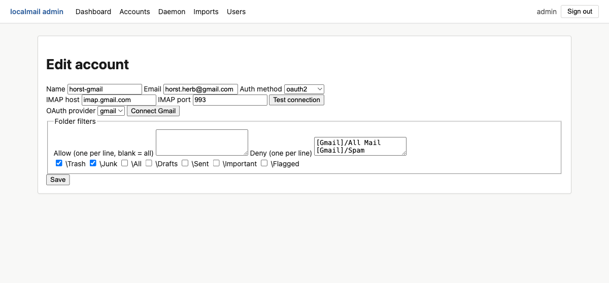
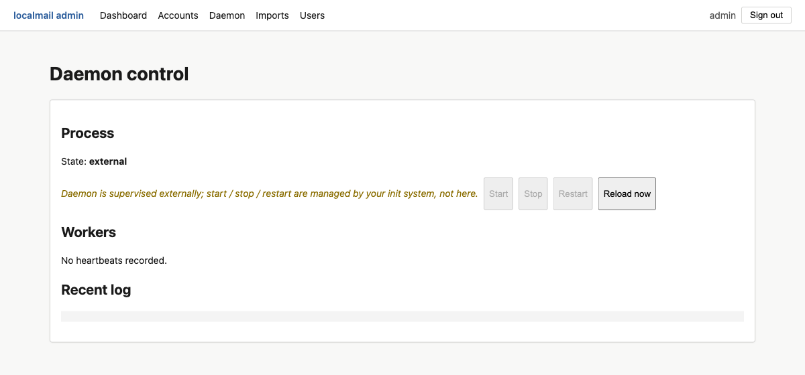
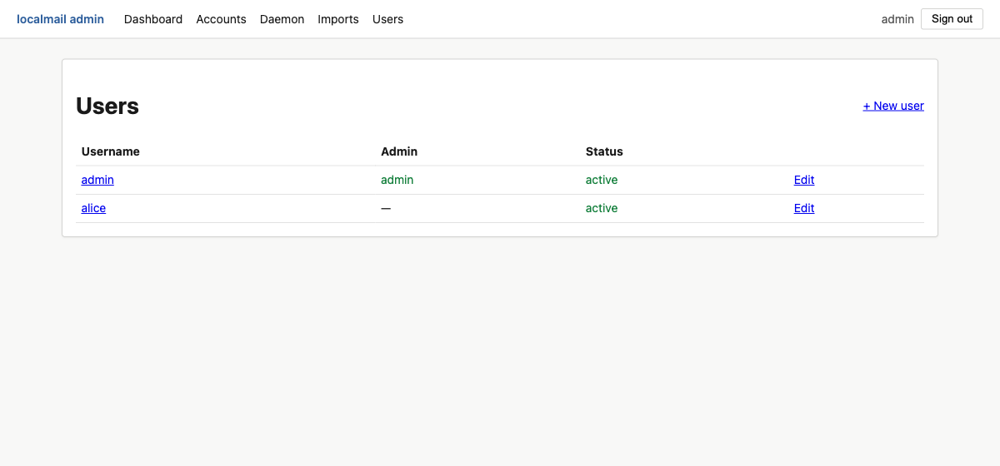
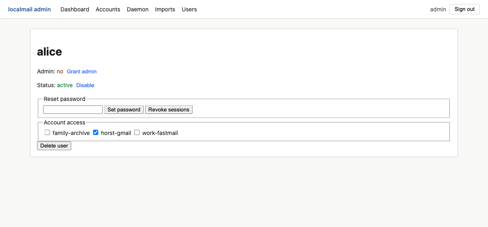

The admin web UI
Once localmail serve is running, an
administrator can manage the whole instance from a browser — accounts,
the sync daemon, archive imports, and API users — without touching the
CLI or config.toml.
What the admin UI is for
localmail keeps the database as the single source of
truth for account configuration. The admin UI is a thin, server-rendered
front-end over that database, mounted at /admin inside the
same localmail serve process that powers the desktop app and
the API. Everything it does is also doable from the
CLI; the UI just makes it pointy-clicky
and remote-friendly.
Only users flagged as admin can sign in to
/admin. A regular API user (desktop-app login) has no admin
access. The machine API under /v1/* never reads the admin
session cookie — the two surfaces are isolated.
Enable it
-
Add signing keys to
config.toml.The admin UI signs its session cookie and the Gmail-OAuth state token. Generate one key per line and drop them under
[serve]:python -c "import secrets; print(secrets.token_urlsafe(32))"[serve] session_signing_key = "<paste a generated key>" state_signing_key = "<paste another generated key>"Without these keys the admin login is disabled. They are secrets — keep them out of version control.
-
Create the first admin user.
This is the one bootstrap step that must happen on the server's shell — there is no chicken-and-egg way to make the first admin from the web:
localmail add-api-user admin --adminYou'll be prompted for a password (argon2id-hashed). Add
--adminto grant admin rights immediately. To promote an existing user instead, uselocalmail grant-admin USERNAME. -
Start the server and open
/admin.localmail serve --bind 127.0.0.1 --port 8443 \ --tls-cert ~/.config/localmail/tls.crt \ --tls-key ~/.config/localmail/tls.keyBrowse to
https://localhost:8443/admin/and sign in. For localhost-only use you can run with--no-tls --bind 127.0.0.1and usehttp://instead.
Sign in
The login screen takes the username and password you set with
add-api-user. Logins are rate-limited (per-user, per-IP, and
globally) and every attempt is audited in Postgres, so the limits hold even
across multiple serve workers and restarts.

/admin/login screen.After signing in you land on the dashboard, which links to the four management areas. The top nav bar is present on every admin page.

Accounts
The Accounts panel lists every account in the database with its email, authentication method, and sync state. From here you can add a new account, edit or delete one, and pause / resume syncing.

The editor exposes every field of an account. Three authentication methods are supported, and the form shows only the fields each one needs:
| Auth method | Use it for |
|---|---|
password | Any IMAP server reachable with a username + password (or app password): Fastmail, Microsoft 365, iCloud, generic IMAP. |
oauth2 | Gmail. Click Connect Gmail to run the browser consent flow and store a refresh token — no password is ever held. |
archive | A holding account for imported mail (mbox / Maildir). It has no IMAP host and is never synced — see Importing mail. |

Folder filters
localmail never has to mirror every folder. The editor offers three controls, evaluated together:
- Allow — if non-empty, only these folders are synced (one folder name per line). Blank means "all folders".
- Deny — folders to skip, by name.
- Deny flags — skip folders by their IMAP special-use
flag (
\Trash,\Junk,\All, …). Prefer these over names: a flag survives provider locales, so\Trashdenies both[Gmail]/Trashand a localised[Gmail]/Bin.
The running daemon reads its account set on a periodic reload, but brand-new accounts and credential changes take full effect after the daemon re-reads — use the Daemon panel's Reload now, or restart it.
Daemon
The Daemon panel shows the sync daemon's process state, each worker thread's most recent heartbeat (red when stale), and a tail of its log. What you can do here depends on how the daemon is supervised:
| Mode | Behaviour |
|---|---|
| Supervised ( supervise_daemon = true, the default) |
serve owns localmail run as a child
process. Start / Stop / Restart are live buttons. |
| External ( supervise_daemon = false) |
An init system (systemd / launchd) owns the daemon. Lifecycle buttons are disabled; you still get Reload now, per-account restart-sync, and read-only status. |

Imports
The Imports panel bulk-loads existing mbox / Maildir
archives into an archive account. It is covered on its own
page — see Importing mail.
Users
The Users panel manages API users: the people and agents that can sign in to the desktop app, the API, or this admin UI.

/admin.The per-user editor is where access is actually granted. A new user can see nothing until you tick the accounts they're allowed to read — the checklist is the per-user access-control list.

- Account access — the ACL checklist. Every API call that user makes is scoped to the ticked accounts.
- Grant / revoke admin — toggles access to
/admin. - Set password — reset without knowing the old one (admin override).
- Revoke sessions — invalidate every outstanding admin cookie for that user immediately.
- Disable — keep the row but block all logins.
- Delete user — remove the user and all their tokens.
The UI won't let you delete or demote the last remaining admin, and you can't delete or demote yourself. Those guards are enforced server-side, so a hand-crafted request hits them too.
Security notes
- TLS is on by default.
--no-tlsis accepted only when bound to127.0.0.1. - Every mutating action carries a method-bound CSRF token, so a token minted for one action can't be replayed against another.
- The admin session cookie is scoped so only
/admin/*routes read it; the machine API at/v1/*authenticates with bearer tokens only. - Login attempts are rate-limited and audited in Postgres. Behind a
reverse proxy, set
[auth].trusted_proxiesso the per-IP limit sees the real client address.